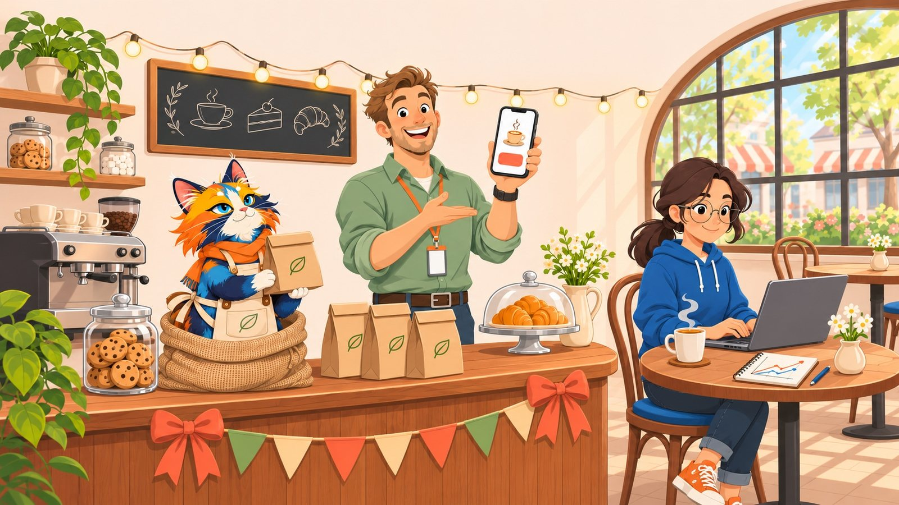
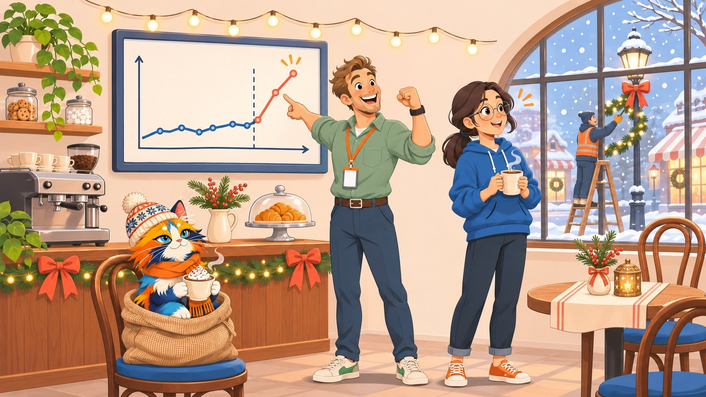
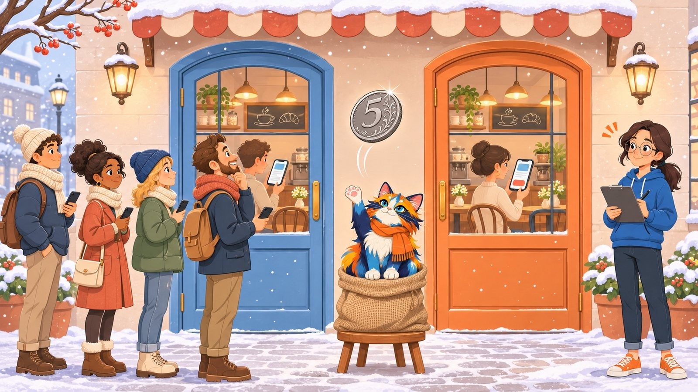
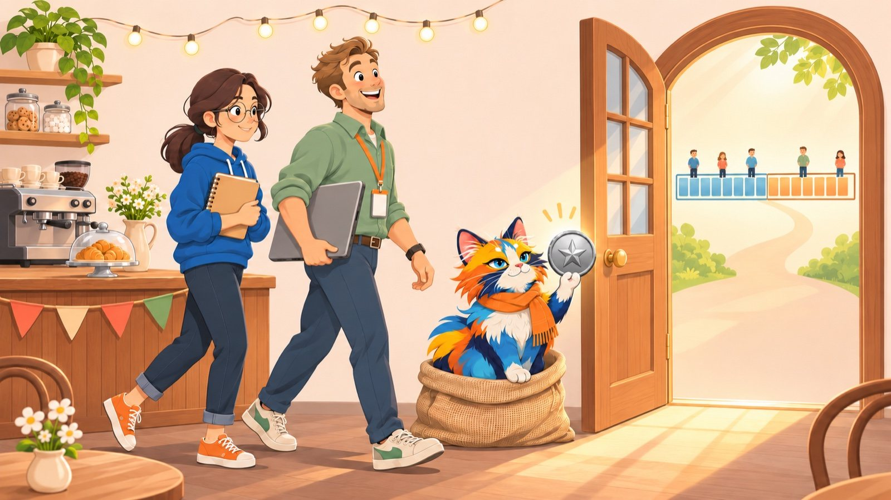

Шаг 1 из 11
До и после — не доказательство
После шага ты сможешь отличить честное сравнение от нечестного и спросить, кто решал, кому что досталось.

Через неделю после новой кнопки заказов стало на 15% больше. Почему это ещё ничего не доказывает? Разберёмся вместе с героями. У Алисы, Боба и Котейки небольшая сеть кафе. В приложении сети можно заказать еду и кофе с доставкой домой или оформить заказ заранее и забрать его в кафе без очереди. Команда постоянно что‑то в нём меняет и хочет понимать, что сработало, а что нет.
Курс для тех, кто принимает решения по результатам A/B‑тестов: менеджеров, продактов, разработчиков. За одиннадцать коротких шагов мы разберёмся, как устроен A/B‑тест и как читать его результаты: что такое шум, откуда берутся колокола, что значат интервал и p‑value и когда отчёту нельзя верить.
Вспомни последний спор о тесте в твоей команде. Кто‑то говорил «выросло», кто‑то отвечал «это сезон». К концу курса у тебя будут вопросы, которые такой спор решают.
Боб выкатил кнопку «Повторить заказ»


1 декабря мы выпустили кнопку «Повторить заказ». Сравнил неделю до и неделю после: было … заказов в день, стало …. Это …! Кнопка работает.
Как думаешь, кнопка правда подняла заказы на столько?
Выбери вариант.
Две недели — это замочная скважина
Вот заказы по дням с сентября по декабрь. Тонкая линия — каждый день, толстая — среднее за последние 7 дней. Выделены неделя до и неделя после релиза.
Заказы по дням, сентябрь — декабрь
Кнопка, которая ничего не делает
Представим, что кнопка вообще не влияет на заказы. Её можно выпустить в любой день года, а потом сравнить неделю до и неделю после. Двигай день релиза и смотри, какой «эффект» получается.
Заказы за год; выбранные недели до и после релиза
«Эффект» для каждого дня релиза
Каждый день, который ты выбрал ползунком, ставит точку: какой «эффект» получился бы при релизе в этот день.
Эффект «после минус до» для каждого возможного дня релиза
Проверь себя
Кнопка ничего не делает. Какой самый большой «эффект» можно получить, если удачно выбрать день релиза?
Самая высокая точка — релиз 20 декабря: +15.8% перед Новым годом. Самая низкая — релиз 6 июня: −6.9%. Кнопка ни при чём, это сезон и праздники.
В скольких днях года «эффект» получается больше 5% в ту или другую сторону?
В 28% дней года, то есть примерно в каждом четвёртом. Посмотри на гистограмму: хвосты за ±5% толстые. Если выпустить пустую кнопку в случайный день, шанс увидеть «эффект» больше 5% чуть меньше, чем выбросить на кубике пятёрку или шестёрку.
В день релиза меняется не только кнопка
Сравнение «до и после» приписывает фиче всё, что изменилось за это время. А меняется почти всё. Открой карточки.
Новый кофе — или ноябрь?
В октябре мы брали зерно у поставщика A, в ноябре перешли на дорогого B. Кофе стали заказывать на 12% чаще. B лучше!
Кроме самого зерна, за этот месяц изменились ещё три вещи. Открой карточки.
Как честно сравнить двух поставщиков?
В одни и те же недели половина кафе работает на A, половина на B. Погода и октябрьские пробники у них общие, а кому какой кофе достался, решила монетка, а не Боб. Тогда разница между группами — это зерно и немного случайности.
Идея из книги: Саманта Клейнберг, «Почему»
Что из чего следует
Смотрите: в кафе, где гости чаще жмут «Повторить заказ», заказов на 30% больше. Значит, кнопка работает!
Какие объяснения у этой связи возможны?
У любой связи двух вещей есть четыре объяснения. Причина: кнопка увеличивает заказы. Обратная причина: кто много заказывает, тому кнопка и нужна. Третий фактор: большие кафе в центре дают и много заказов, и много нажатий. Совпадение: кафе мало, связь случайная. По одной связи не понять, какое из них верное.

Мяу. Прошлой весной я чихал, мне дали таблетку — через неделю прошло. Осенью таблетки не было — и тоже через неделю прошло.

Вот поэтому нужна контрольная группа: те, кто живёт в то же время, но без новинки. А делить группы должна монетка.
Одинаковыми группы монетка не сделает: в одной случайно окажется чуть больше любителей кофе. Зато различия станут случайными, а случайность — это шум, который мы научимся мерить в шагах 3–6.
Идея из книги: Владимир Савельев, «Статистика и котики»
Промо для худших кафе
На прошлой неделе пять наших кафе провалились по заказам. Запускаю там промо — посмотрим, вытянет ли.
Ниже 20 кафе сети. Точка — сколько заказов на 100 гостей сделали в кафе на прошлой неделе. Кафе выстроены от худшего к лучшему. Красные — пять худших, туда Боб отправил промо. Зелёные — пять лучших, там ничего не меняли.
Важно: в этой игре промо не делает ничего. У каждого кафе свой обычный уровень, а неделя к неделе он гуляет от погоды и случая.
Что будет через неделю с пятью худшими?
Выбери вариант.
Заказы на 100 гостей в 20 кафе: прошлая неделя и следующая
Худшие на прошлой неделе были худшими во многом случайно: им не повезло. Через неделю невезение откатывается, и они растут сами. Чтобы проверить промо, нужна контрольная группа из таких же провальных кафе: половине промо, половине нет — по монетке.
Идея из книги: Дэвид Шпигельхалтер, «Искусство статистики»
Одновременно, а кому что — решает монетка

Алиса предлагает по-другому. С 1 декабря каждому пользователю Котейка подбрасывает монетку: орёл — видит новую кнопку, решка — старое приложение. Обе группы живут в одни и те же дни: у них одна погода, одни праздники и одно зимнее меню. Разница между ними — это кнопка и немного случайности.
Проверим, какой способ ближе к правде. Пусть кнопка на самом деле добавляет заказам +2%. Котейка выбирает случайный день года и выпускает кнопку, а мы считаем эффект двумя способами и сравниваем с правдой.
Какой способ покажет эффект ближе к правде?
Способ 1. До и после
Синим — все заказы за неделю до релиза, красным — за неделю после. Пунктир — среднее за неделю.
Заказы за неделю до релиза и неделю после
Показал: …
Способ 2. Одновременно, по монетке
Те же 14 дней после релиза: синим — половина гостей со старым приложением, красным — половина с новой кнопкой.
Заказы двух групп по дням
Показал: …
Каждый эксперимент — точка
Ставим точку там, какой эффект показал эксперимент. Зелёная линия — правда. Чем ближе точки к линии, тем честнее способ.
Оценки эффекта двумя способами: «до и после» и A/B
Один эксперимент может случайно попасть близко к правде. Запусти ещё пару раз — или сразу сотню в разные дни года.
Кто попал в B, тот и считается в B
Тест честный: монетка разделила гостей примерно поровну, около 1000 в группе. Кнопка «Повторить заказ» живёт на экране «Мои заказы», и в группе B туда за неделю заглянули 300 гостей из 1000. Остальные 700 кнопку так и не увидели. В этой игре кнопка ничего не делает.
Зачем считать тех, кто кнопку не видел? Беру только увидевших: они заказывают на 40% чаще контроля!
В тесте новых фото блюд в B их пролистали 250 гостей из 1000. Боб хочет сравнить их с контролем. Как сравнить честно?
Монетка гарантирует случайность только для групп целиком. Из 1000 гостей B считаем всех 1000, даже тех, кто фото не видел, и сравниваем со всеми 1000 гостями A. Тогда разница — это фото и шум, а не то, кто любит листать меню.
Идея из книги: Дэвид Шпигельхалтер, «Искусство статистики»
Эффект тает, если изменение видят не все
Теперь пусть кнопка правда работает: на каждые 100 гостей, которые её увидели, приходится на 1 заказ больше. Но увидят её не все. Двигай ползунок и смотри, что останется от эффекта в сравнении целых групп.
1000 гостей группы B: кто увидел кнопку и кто заказал благодаря ей
Поэтому, когда тест планируют, а это шаг 9, сначала спрашивают: сколько гостей вообще столкнётся с изменением? Если кнопку увидит каждый десятый, тесту придётся заметить эффект в десять раз меньше, чем у тех, кто её видел.
Найди, что ещё изменилось
Пять историй из жизни продуктовой команды. Где‑то эффект фичи перемешан с чем‑то ещё, а где‑то сравнение честное. Разберись в каждой.
В пятницу выкатили новый экран оплаты. В субботу и воскресенье заказов на 9% больше, чем в среду и четверг. Что это значит?
Выходные и будни — разные дни: в нашем кафе в пятницу и субботу заказов и так на 10% больше, чем в понедельник. Эффект экрана тут не виден совсем. Мало дней — тоже проблема, но не главная.
Новую версию приложения поставили уже 30% пользователей. У них заказов на 20% больше, чем у остальных. Что это значит?
Кто обновился, а кто нет, выбирали сами пользователи. Те, кто часто открывает приложение, и обновляются раньше, и заказывают больше. Сравниваем разных людей, а не версии.
Фичу включили только в Казани. Там заказы за месяц выросли на 6%, а в Самаре — на 1%. Что это значит?
В Казани за этот месяц могло случиться что угодно: фестиваль, своя погода, реклама конкурента в Самаре. Город выбрали не монеткой, и сравнение с прошлым годом от этого не спасает.
Гости, которые пользуются приложением больше года, заказывают втрое больше новичков. Значит, приложение со временем приучает заказывать?
Это ошибка выжившего. В «больше года» попали только те, кто не бросил приложение, а те, кому не понравилось, ушли, и их заказов в сравнении нет. Приучает ли приложение заказывать, покажет только эксперимент.
Котейка разделил гостей монеткой, обе группы живут в одни и те же две недели. В группе с новой кнопкой заказов на 4% больше, и Алиса проверила: случайно такая разница почти не получается. Что можно сказать?
Здесь всё сделано честно: группы живут в одно время, а кому что досталось, решила монетка. Остаются кнопка и случайность, а случайность Алиса уже проверила. Как это проверяют, разберём в шагах 3–7.
Сравниваем одновременно, делим случайно
- До и после приписывает фиче всё, что изменилось во времени: сезон, праздники, погоду, другие релизы.
- «Кто включил» против «кто не включил» приписывает фиче то, чем эти люди отличались с самого начала.
- Связь — ещё не причина. У неё всегда четыре объяснения: причина, обратная причина, третий фактор и совпадение.
- Крайние значения сами возвращаются к обычным. Худшие на прошлой неделе кафе вырастут и без промо, а лучшие просядут. Сравнивай с контрольной группой из таких же.
- Ошибка выжившего: «давние гости заказывают больше» — может, просто остались только довольные.
- Честное сравнение: две группы живут в одно и то же время, а кто в какую попал, решает монетка. Сезон, праздники и погода у групп общие.
- Монетка не делает группы одинаковыми. Она делает различия между ними случайными, а случайность входит в шум, который мы научимся мерить в шагах 3–6.
- Кто попал в B, тот в B и считается, даже если фичу не увидел. «Увидевшие против всего контроля» — снова сравнение разных людей.
- Если изменение видит только каждый десятый гость, лишних заказов на всю группу в десять раз меньше, чем если бы видели все. Это важно, когда планируешь тест.
Теперь у того, что мы сделали руками, есть названия:
- Контроль (A)
- группа, которая видит старую версию
- Тест (B)
- группа, которая видит новую версию
- A/B‑тест
- одновременное сравнение контроля (A) и теста (B), когда пользователей разделили случайно. Отсюда и название: A — то, что есть сейчас, B — новое
